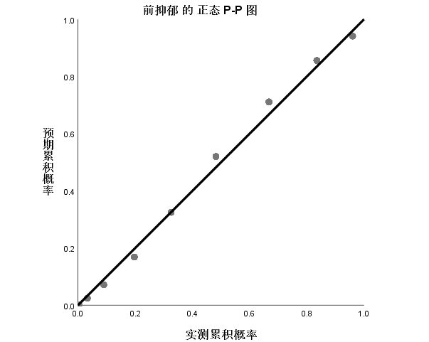

变量的正态分布是很多统计方法的基础, 只有满足这个假设我们才能认为统计结果是可信的。 那么我们怎么去检验变量是否满足正态假设呢?
本篇文章介绍了多种方法来判断正态性: 偏度峰度/K-S检验/PP图QQ图。
直方图
在理解偏度和峰度之前, 我们可以看下直方图, 这个图的横轴表示每周工作小时数, 纵轴表示每个时间段的频数, 这个图的数据是调查了457个人。
通过直方图, 我们可以从直观上判断”每周工作小时数”是否满足正态分布。

偏度（Skewness）
偏度是分布中对称性的量度。实际上，将其描述为缺乏对称性的一种度量更为正确。标准正态分布是完全对称, 偏度为0。零偏分布的其他示例是T分布，均匀分布和拉普拉斯分布。但是，其他分布没有零偏度。因此，我们需要一种方法来计算分布偏斜的程度。
偏度的计算公式:
$
Sample\;skewness = \frac{N\cdot\Sigma(X_i - \overline{X})^3}{S^3(N - 1)(N - 2)}
$
其中:
$X_i$: 个案数据$\overline{X}$: 均值$S$: 标准差$N$
excel计算
我搜到的这张图可以帮助你使用excel计算偏度。

spss计算
首先, 打开”频率”对话框:
然后, 在”统计”选项里, 选择偏度:

峰度
峰度是对尾巴末端的一种度量，它反映了分布中存在异常值或分布的离散程度的度量(Westfall,2014),
计算公式
$
K = \frac { \Sigma(X_i - \overline{X})^4} {(n-1)s^4}
$
其中:
$X_i$: 个案数据$\overline{X}$: 均值$S$: 标准差$N$
spss计算

偏度和峰度的结果解读
偏度
- 如果偏度为正，则数据为正偏或向右偏，表示分布的右尾比左尾长。
- 如果偏度为负，则数据为负偏或左偏，这意味着左尾巴更长。
- 如果偏度= 0，则数据是完全对称的。但是偏斜对于现实世界的数据，完全不可能为零是零，那么如何解释偏度数？
这本书《Principles of Statistics (Dover, 1979)》建议:
- 偏度在-0.5到0.5之间, 分布是近似对称的
- 偏度在-1到1之间, 但不在-0.5到0.5之间, 分布是适度倾斜的
- 偏度在-1到1之外, 分布是非常倾斜的
但是, 我们怎么判断偏度到达多少就可以说满足正态分布的假设? 一般来说, 在α=0.05的检验水平下，若$-1.96<S/S_e$
峰度
正态分布的峰度恰好为3, 相当于SPSS计算得到的0, 因为spss计算的是excess kurtosis, 也就是峰度减去3以后的值, 这样看起来更直观。
峰度≈3（过量≈0）的任何分布称为mesokurtic中等的
峰度<3（峰度＜0）的分布称为
platykurtic。与正态分布相比，其中心峰为
更低更宽，尾巴更短更细。
峰度> 3（峰度> 0）的分布称为
瘦素体。与正态分布相比，其中心峰为
更高，更尖，尾巴更长，更胖。
检验excess kurtosis是否显著的不等于0就可以检验数据是否服从正态分布, 因此
怎么判断峰度到达多少就可以说满足正态分布的假设? 一般来说, 在α=0.05的检验水平下，若$-1.96<K/K_e$
不推荐K-S检验
有一个样本Kolmogorov-Smirnov检验用于检验变量是否遵循总体中的给定分布。这种“给定分布”通常不一定是正态分布，因此我们强调现在用的是“ Kolmogorov-Smirnov正态性检验”。
在spss中, 我们可以这么做:
在对话框中勾选”正态”
我们可以看到这五个变量都不服从正态性假设:

Kolmogorov-Smirnov检验通常用于检验许多统计检验（如方差分析，t检验和许多其他检验）所需的正态性假设。但是，如果样本大小合理（例如N≥25），即便没有通过KS检验的变量我们仍然可以假定为符合正态分布。因此，只有小样本才需要进行正态性检验。
不幸的是，样本量小导致正态性检验的统计功效低。这意味着与正态性的实质性差异不会导致统计学意义。简而言之，需要进行正态性检验的情况（小样本量）下, KS方法也是不给力。
PP图&QQ图
P-P图将数据集的累积分布与指定的理论累积分布F进行比较。 Q-Q图将数据分布的分位数与来自指定分布族的标准化理论分布的分位数进行比较。

将你想要考察的变量放入变量框

如果数据点大部分落在对角线附近, 说明数据的分布与理论的分布差别不大, 进而认为数据基本上符合正态分布

总结
以下文字来自于参考文献④:
统计错误在科学文献中很常见，大约50％的已发表文章中至少有一个错误[1]。许多统计程序，包括相关性，回归，t检验和方差分析，即参数检验，都是基于这样的假设，即数据遵循正态分布或高斯分布（在约翰·卡尔·高斯之后，1777-1855年）；也就是说，假设从中抽取样本的总体是正态分布的。 应该认真对待正态性和其他假设，因为当这些假设不成立时，就不可能得出关于现实的准确和可靠的结论[2]。
如果样本量足够大（> 30或40），则违反正态性假设不会造成重大问题[3]；这意味着即使数据不是正态分布的，我们也可以使用参数检验。如果我们有包含数百个观测值的样本，则可以忽略数据的分布[4]。根据中心极限定理，（a）如果样本数据近似正态，则采样分布也将为正态； （b）在大样本（> 30或40）中，无论数据的分布如何，采样分布都趋于正态； （c）来自任何分布的随机样本均值本身将具有正态分布。
参考
[1]Guidelines for reporting statistics in journals published by the American Physiological Society.
Curran-Everett D, Benos DJ, American Physiological Society.
Am J Physiol Endocrinol Metab. 2004 Aug; 287(2):E189-91.[2]Ghasemi, A., & Zahediasl, S. (2012). Normality tests for statistical analysis: a guide for non-statisticians. International journal of endocrinology and metabolism, 10(2), 486–489. https://doi.org/10.5812/ijem.3505
[3]Pallant J. SPSS survival manual, a step by step guide to data analysis using SPSS for windows. 3 ed. Sydney: McGraw Hill; 2007. pp. 179–200.
[4]Statistics notes: the normal distribution.
Altman DG, Bland JM
BMJ. 1995 Feb 4; 310(6975):298.[5]Westfall, P. Kurtosis as Peakedness, 1905 – 2014. R.I.P. Am Stat. 2014 ; 68(3): 191–195
注意
本文由jupyter notebook转换而来, 您可以在这里下载notebook
有问题可以直接在下方留言
或者给我发邮件675495787[at]qq.com
请记住我的网址: mlln.cn 或者 jupyter.cn